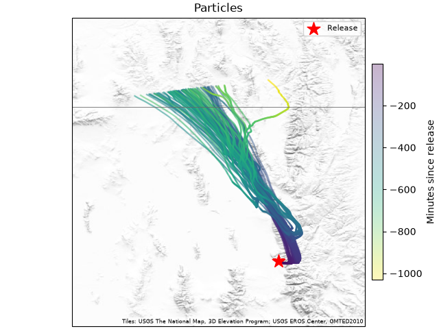

Checking A Run#
A batch of thousands of runs is quick to start and slow to find wrong. We
run runtraj check before every batch, because it finds the common
mistakes in the inputs in seconds, and runtraj status after, because it
says which simulations need another look and why. When a run finishes but
its particles look wrong, the last section lists what to check, in order.
The examples on this page that run use a small sample project: four
releases an hour apart on the morning of 15 January 2021 at one site in Salt
Lake City, 24-hour backward runs with 100 particles, and one variant,
hrrr. It was made as in Projects And Variants, “The same project in Python”.
Before a run#
Most failures of a new project come from its inputs: a met folder with a
typo, met files that miss some release’s hours, a release outside the met’s
domain. runtraj check reads the project’s files and the headers of the
met files, and runs and downloads nothing:
$ runtraj check ./my_project
Project: /data/my_project releases=6
Variants: hrrr (met hrrr, particles only), hrrr-zi08 (met hrrr, particles only)
check variant release message
model hrrr, hrrr-zi08 No hycs_std on PATH. runtraj does not include HYSPLIT: get it (the installation guide says where), then set directory (under models: hysplit: in config.yaml) to the HYSPLIT folder, or put the folder that holds an executable hycs_std on PATH.
met_files hrrr, hrrr-zi08 202101140200_-111.848_40.766_10 no met file for 2021-01-13 02:00 to 2021-01-14 02:00
met_domain hrrr, hrrr-zi08 202101150800_-115.5_40.766_10 longitude -115.5 and latitude 40.766 are outside the met's domain, the grid of /data/arl/hrrr/20210114_06-11_hrrr.crop_-114.00_39.00_-110.00_42.00: HYSPLIT cannot start particles there.
Found 3 problems: model 1, met_files 1, met_domain 1
Here hycs_std is not on PATH, one release needs met files from
hours the met folder does not have, and another lies west of the met’s
domain. Variants that share what a check
looks at share its rows. The command exits with 0 when it finds nothing and
1 when it lists anything, so a batch script can stop on it.
Check |
What it found |
What to do |
|---|---|---|
|
The project has no releases: |
Add releases (Releases). |
|
No |
Get HYSPLIT and set |
|
The transport model cannot run a release. HYSPLIT refuses a
multipoint release whose points share a horizontal location, which
it would join into a line source; such a run fails as
|
For HYSPLIT, use a |
|
A met’s |
Correct |
|
A release’s run needs a met file that is not there, or files of two products hold one of its times. The message names the hours or the two files. |
Add the files, or keep each product in its own folder (Meteorology). |
|
A release lies outside the grid of the met files its run starts in, where HYSPLIT cannot start particles. The grid is read from a file’s header. |
Use met files whose domain holds the release, or check the sign of its longitude. |
|
With |
Widen |
|
A release’s run needs more than 128 met files, more than HYSPLIT reads in time. |
Use met files that each hold more hours, such as daily ones, or shorter runs. |
|
A file the releases need holds one time period, which HYSPLIT cannot read. |
Use files that each hold at least two time periods. |
|
A file the releases need ends partway through a time step, so it is damaged. |
Download or crop the file again. |
|
Two mets of one transport model record the same settings, such as two folders of WRF files with one source id, so variants that differ only in their met would share one run. A run refuses them too. |
Give each met a |
|
|
Add |
A stage adds checks of its own inputs, under names it chooses: a stage that
sums particles onto a grid may list a release outside its grid. runtraj
check reads the headers of the met files, not every record, so a file
damaged in the middle passes the check and fails the run that opens it.
In Python, project.check() returns the same table, one row for each
thing found. It is empty for the sample project, which has everything its
runs need:
In [1]: import runtraj
In [2]: project = runtraj.Project("./my_project")
In [3]: problems = project.check()
In [4]: problems
Out[4]:
Empty DataFrame
Columns: [check, variant, release, message]
Index: []
The table is a pandas DataFrame, so problems[problems.check ==
"met_files"] selects the releases that lack met files.
Where each simulation stands#
runtraj status counts the simulations of a project by state and the
failed ones by reason, then lists the settings folders in the output
directory (Projects And Variants, “Changing a setting”). With failures, its first
lines look like this:
$ runtraj status ./my_project
Project: /data/my_project total=1200 complete=1150 failed=42 interrupted=0 pending=8
failed: MET_COVERAGE 34, TIMEOUT 8 (why: each one's .failure.yaml, under /data/my_project/output/logs)
In Python, project.status() has one row per simulation, so you can
select the failures and read why:
In [5]: status = project.status()
In [6]: status.state.value_counts()
Out[6]:
state
complete 4
failed 0
interrupted 0
pending 0
Name: count, dtype: int64
In [7]: status[status.state == "failed"][["release", "variant", "reason", "message"]]
Out[7]:
Empty DataFrame
Columns: [release, variant, reason, message]
Index: []
Every simulation of the sample project is complete, so there are no failures to list. The state comes from the files in the output directory, so it is the same whoever asks:
State |
What it means |
What to do |
|---|---|---|
|
Its result files exist: the particles, and the file of each stage its variant has. |
Nothing. A rerun skips it. |
|
The last run failed, and a failure record says why (below). |
Fix the cause and run again. Only the unfinished simulations run. |
|
The run started and was stopped before it finished: a time limit, preemption, Ctrl-C, or a lost connection. |
Run again. A Slurm task that gets its two-minute warning is requeued by its job script. |
|
It has not run yet, or its particles exist and a stage file does not. |
Run the project. |
runtraj run exits with 0 when all its simulations are complete, 1 when
some failed and 3 when some were interrupted, so a script or a scheduler can
rerun on 3 and stop to look on 1 (Exit codes lists every code).
Why a simulation failed#
A failed simulation does not stop the others. The worker writes a failure
record beside the run’s log and goes on, and sim.failure reads it:
>>> failed = status[status.state == "failed"]
>>> sim = project.simulation(failed.release.iloc[0], "hrrr")
>>> sim.failure
{'stage': 'particles', 'reason': 'MET_COVERAGE',
'message': 'HYSPLIT: start point not within (x,y,t) any data file',
'time': '2026-10-03T21:14:05+00:00'}
stage says whether the transport model failed (particles, which
fails every variant that shares those particles) or only a stage, by its
name. message is the line of the log that says what went wrong. Three
reasons cover most failures:
MET_COVERAGEThe meteorology does not cover the run: a file is missing or damaged, or the met ran out partway. The message names the file or the hours. Download or crop the file again, or add the missing hours. A release outside the met’s grid fails this way too.
EXIT_STATUSHYSPLIT was killed or exited with an error. A
SIGKILLthat runtraj did not send is often the out-of-memory killer, so ask for more memory per task or run fewer releases at once.TIMEOUTThe run took longer than
timeoutunderexecution:. Raise it, or look for a slow node or a met file read over a slow filesystem.
The other reasons are rarer. Every reason, with what to do, is in HYSPLIT Integration (“Failure
reasons”). An error that is not a known reason is recorded by its class,
such as ValueError, with its traceback. That is usually a bug, and worth
reporting.
sim.log is the transport model’s log. A failed run’s workdir,
the folder HYSPLIT ran in, is kept under scratch/ in the output
directory, and sim.kept_workdir says where. For HYSPLIT it holds
CONTROL, SETUP.CFG and MESSAGE, enough to rerun hycs_std by
hand. The particle file is left out, since it can take hundreds of
megabytes. Set keep_workdir: true under execution: to keep every
run’s workdir whole, particle file included.
My particles look wrong#
Start with a map, because it shows where the air went:
In [8]: sim = project.simulation("202101150800_-111.848_40.766_10", "hrrr")
In [9]: particles = sim.particles
In [10]: particles.runtraj.plot.map(release=sim.release);


The particles of this run went north-northwest up the valley until they reached the northern edge of the cropped met files, where they stopped. Then check, in order:
- The time
Release times are UTC. A time in local time shifts the release, and with it every trajectory.
- The release height
Altitudes are above ground unless the release says
altitude_ref="msl". A tower inlet given above sea level as if above ground starts the particles high above the mixed layer, far from the surface.- The length of the run
n_hourssets how far the particles go. Particles also stop early when they leave the met’s domain or its crop, and the run is still complete.particles["age"].abs().max() / 60is how many hours they went. If that is short, widen the met’s domain orsubgrid_bounds(Choosing Settings).- The number of particles
Few particles sample the turbulence poorly, so a map or a sum over them is patchy. Raise
numpar(Choosing Settings).- The direction
A negative
n_hoursruns backward, from a measurement toward its sources; a positive one runs forward from a source. A sign the wrong way round sends the particles downwind of where you meant.